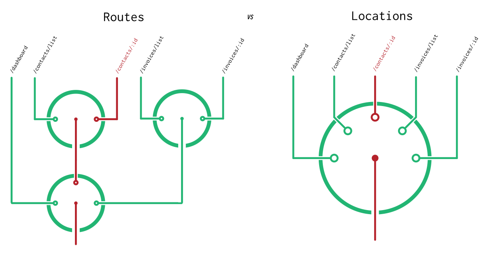
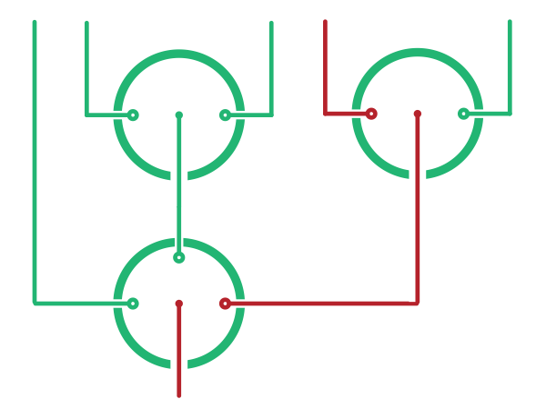
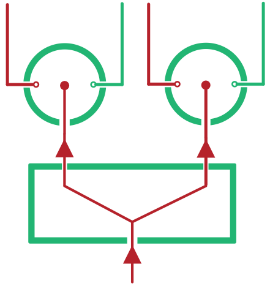

Routes
Routes are objects which contain instructions on which parts of the applicaiton to display. In a way, they're a lot like Locations. In fact, both Location objects and Route objects store exactly the same information. The difference is in how this information is structured.
Route objects have a structure which mirrors your component hierarchy. Location objects have a structure which mirrors your browser's History and URL API.
If this feels a little like word soup, it might help to consider what the words "Route" and "Location" mean in plain English. While a "Location" is like a point on a map, a "Route" contains the information on how to actually get there. So where a Location holds an absolute location within your app, a Route holds a tree of decisions on which branch to follow at a given point. Which you can visualize as a path through a number of switches:

So what does a Route object look like in practice? Here's a really simple one:
{
// The type of child to render for this component
branch: PaymentList,
// An object which holds aribtrary data, based on the current branch
data: { ... },
// Any extra information you need to render that child
params: {
order: 'date',
where: { paid: false },
},
children: null,
}
This Route represents the right hand side of the URL in the example Location from the Locations section. Visually, you could imagine it as a single active joint betewen two switches. The params here come from the location's search property, while the branch is taken from the pathname. You'll see where PaymentList comes from in a moment, but for now all you need to know is that it represents one of a set of patterns within a certain slice of the URL.
Ok, so this gives us the right hand side of the URL. How do we represent the left hand side?
{
branch: Contacts,
data: { ... },
params: {
id: '15',
},
children: /* ... */,
}
Looks pretty much the same as the first Route, right? The difference is that this Route has a non-null value for children. Actually -- the first route is included in the children of second route. And that means that this represents a path through a number of switches.

Ok, so now we've converted the URL from this Location:
// Location
{
pathname: '/contact/15/payments',
search: '?order=date&where=paid:false'
state: {
$$junctions: {
'main': { branchKey: 'AddContactModal' },
}
}
}
But the Location still has some information in its state property -- how do we deal with this?
It turns out that we don't yet know enough to say exactly how that state will convert to a Route, but let's make a guess. Given the state object has a key of AddContactModal, we can assume that it means there'll be a child Route within the Contacts branch which indicates that a modal is open. And this presents a problem. How can we have two child Routes active at one time?
Route Sets
A RouteSet is an object which can represent multiple active routes. If we think about it in terms of the above diagram, this means that in addition to being able to represent a single active line, it also represent a split in a line -- allowing multiple children to be active simultaneously.

So where are route sets used? In every Route object's children! This ensures that any Route can represent state stored in a URL as well as state stored in HTML5 history state. For example, the current page's active tab, as well as an active modal.
This is an important difference between Junctions and URL-based routers, so it is worth spending a moment to really get your head around how this works.
The thing about URLs is that they're like a list of instructions -- "take this branch, then take that branch, then take that branch". This means that you represent a URL as a list of routes with no splits. Just like that first route diagram:
But by using state, we're no longer limited in this way. We can now take multiple paths at once, and render mutiple child components with their own routes from within a single component. Or in other words, we can have superimposed routes.
Example
Now that you know about Routes and Route Sets, let's have a look at a complete pair of Location and Route:
// Route
{
branch: Contacts,
data: { ... },
params: {
id: '15',
},
// A `RouteSet` is just an object mapping string keys to `Route` values
children: {
// The `main` Route always corresponds to the URL part of the `Location`
main: {
branch: PaymentList,
data: { ... },
params: {
order: 'date',
where: { paid: false },
},
},
// Other Routes correspond to the `state` part of the `Location`
modal: {
branch: AddContactModal,
data: { ... },
},
},
}
Next Steps
You should now have a basic grasp of what a Route actually is. But what is that data property? And what about the Contacts, PaymentList and AddContactModal objects in the above example?
Actually, these objects are something that we need to declare. They're how we teach Junctions how to map between Locations and Route Sets. And they're part of what gives this package its name.